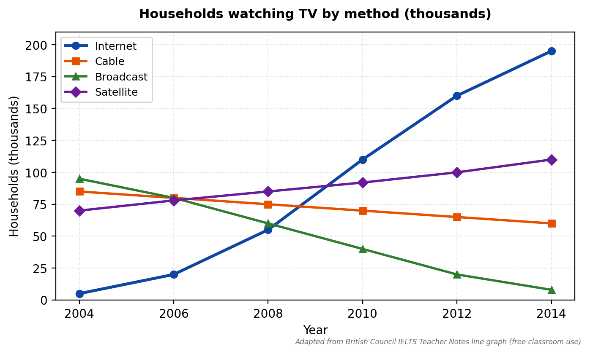
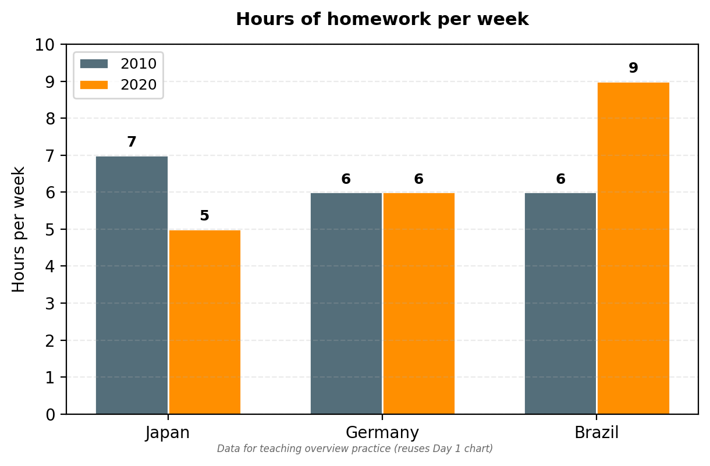
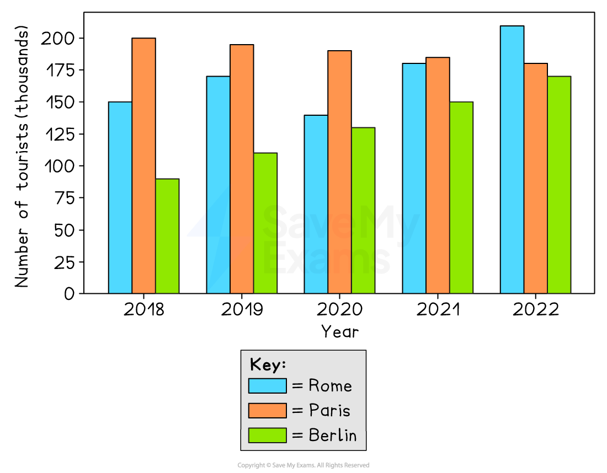
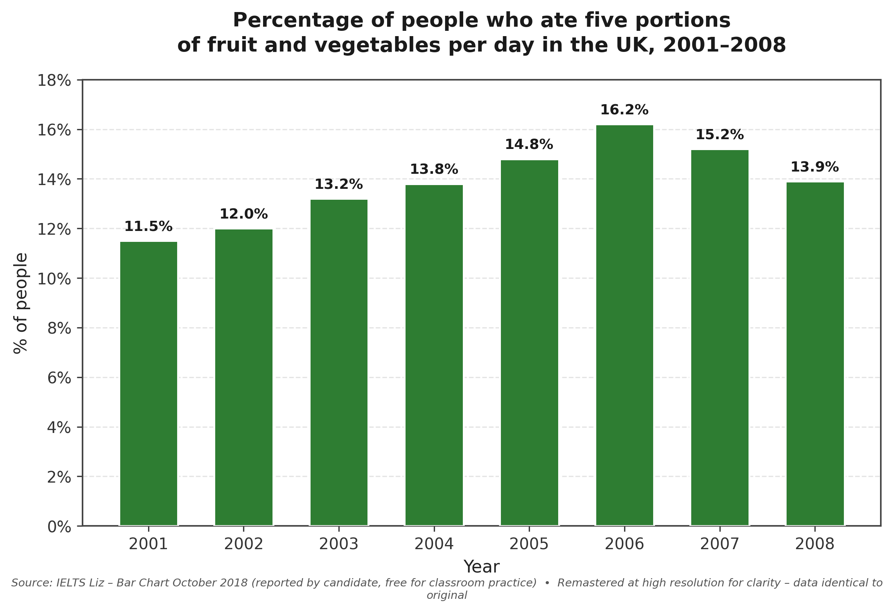

Today
Overview = map. Details = walk. Numbers go after.
Hello
1 minDay 1 → Day 2. One memory.
What is it?
PickMap, not walk.
Good or weak?
LookSame chart. Two texts.

A Overall, broadcast fell, cable fell, satellite rose slightly and internet rose a lot. In 2004 broadcast was 90k and internet was almost zero.
B Overall, internet use rose dramatically to become the most common method, while broadcast and cable both declined, with satellite rising only slightly.
Find the best
Core3 texts. 1 good.

1 Overall, Japan had 7 hours in 2010 and 5 in 2020. Germany had 6 and 6. Brazil had 6 and 9.
2 Overall, students in Asia spent more time than in South America, and homework increased everywhere.
3 Overall, students in Brazil spent more time than in Japan and Germany, and this gap widened.
Words, no numbers
WordsSay change. No numbers.
Your turn. With Overall,
Say it
Where?
Place4 parts. Find overview.
[1] The chart compares TV use, 2004 to 2014.
[2] Overall, internet rose dramatically to become the most common, while broadcast and cable declined.
[3] In 2004 cable and broadcast were highest, about 70-100k. Internet was almost zero.
[4] By 2014 internet was almost 200k, broadcast was the lowest.
We write
With teacherTogether. One line.
1. Overall,
2. What went up?
3. What went down?
4. Link: while
Overall, internet rose dramatically, while broadcast and cable declined.
Fix it
FixSame chart. Fix the weak one.

Weak: Overall, Paris had 200k in 2018 and Rome had 210k in 2022.
You write
You do 5:00Alone. 5 minutes.

{kind=link}
1-2 lines. 2 trends. No numbers. Start: Overall,
Press Start → write.
Check + list
1 fixOne fix only. Small step.
| My sentence | Better | My try |
|---|---|---|
| use rise | use rose | tourists increased |
Done Annisa ✓
2 trends. No numbers. You did it.